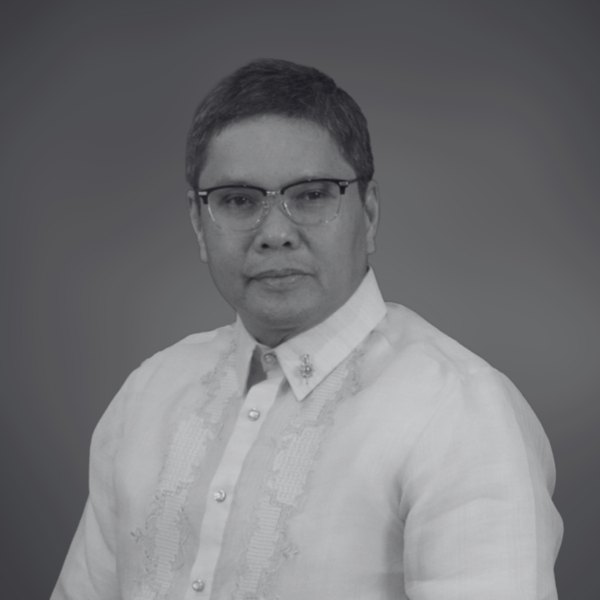
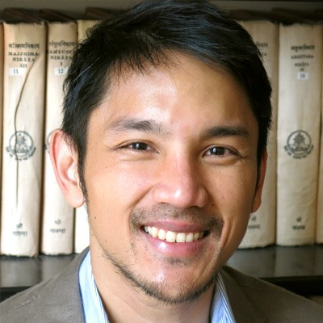

UC Berkeley, Lunes, Nobyembre 9, 2026
When the Waters Rise
Kapag Tumaas ang Tubig
Tatlong nangungunang Pilipinong iskolar, isang talakayan: bakit paulit-ulit na binabaha ang Pilipinas, sino ang nagbabayad dito, at ano ang magagawa ng mga tao rito sa Bay Area? Si Dr. Mahar Lagmay, ang siyentipikong nasa likod ng pambansang flood hazard mapMga mapa ng kung saan pupunta ang tubig, at gaano kalalim, kapag bumuhos ang isang tiyak na dami ng ulan. Ipinapakita ito ng mga mapa ng Project NOAH para sa mga ulang napakalakas na dumarating halos minsan sa bawat 5, 25 o 100 taon. ng bansa, ay makakasama nina Dr. Lisandro Claudio ng Berkeley, isang historyador ng estado at pananalapi ng Pilipinas na kinilala ng mga parangal, at Dr. Diana Martinez, isang historyador ng arkitektura na nag-aaral kung paano itinayo ng Estados Unidos ang pamamahala nito sa kapuluan gamit ang kongkreto.
- Kailan
- Lunes, Nobyembre 9, 2026
3 hanggang 5 ng hapon (oras sa California) - Saan
- Banatao AuditoriumIpinangalan kay Diosdado “Dado” Banatao, isang Pilipino-Amerikanong inhinyero at negosyante sa Silicon Valley na nagtatag din ng Philippine Development Foundation (PhilDev).
Sutardja Dai Hall, UC Berkeley. Direksyon - Online
- May livestream
Ipapadala ang link sa lahat ng mag-RSVP - Bayad
- Libre
Bukas sa lahat
Idagdag sa kalendaryo
Malugod na tinatanggap ang lahat, taga-PampangaLalawigan sa hilaga ng Maynila, sa mabababang kapatagan ng Gitnang Luzon kung saan umaapaw ang mga ilog halos tuwing tag-ulan. man ang pamilya mo o hindi ka pa nakakapunta sa Pilipinas. Mga dalawang minuto lang ang RSVP, at nasa Ingles ang form. Read in English.
Sino ang darating
Nilo-load ang mapa…
Ang mapa bilang listahan
Bawat pigura ay isang taong nag-RSVP, nakalagay sa county nila sa Bay Area at, kung pumili sila, sa lalawigan sa Pilipinas na may ugnayan sila. Walang pangalan at walang bayan. Ang asul ay kung saan aabot ang 100-taóng bahaBahang napakalaki na may 1 sa 100 tsansang mangyari sa alinmang taon. Hindi ito "minsan sa isang siglo": maaari itong dumating nang dalawang taon nang magkasunod, at lalong pinalalakas ng umiinit na dagat ang malalakas na ulan.. Nag-a-update ang mapa halos bawat minuto.
Ang mga tagapagsalita
Agham, kasaysayan at ang mundong itinayo ng tao: bawat isa ay may ibang sagot kung bakit patuloy na tumataas ang tubig, at kung ano ang pananagutan natin sa isa't isa kapag nangyari ito. Kung bakit pinagsama namin ang tatlong ito.
-

Dr. Mahar Lagmay
Executive Director, UP Resilience InstituteIsang instituto ng Unibersidad ng Pilipinas na nag-aaral ng sakuna at panganib sa klima at tumutulong sa mga komunidad na maghanda. Ito ang nagpapatakbo ng Project NOAH., at Propesor sa UP National Institute of Geological Sciences
Pinamumunuan ni Dr. Lagmay ang Project NOAHNationwide Operational Assessment of Hazards. Inilunsad noong 2012 sa ilalim ng Department of Science and Technology, na si Dr. Lagmay ang namuno. Minamapa nito ang baha, pagguho ng lupa at storm surge sa buong bansa. Ang Unibersidad ng Pilipinas na ang nagpapatakbo nito mula 2017., na nagmapa ng panganib ng baha, pagguho ng lupa at storm surgeTubig-dagat na itinutulak papasok sa lupa ng hangin ng bagyo. Umabot nang ilang metro ang storm surge ng Yolanda sa Tacloban noong 2013. sa buong Pilipinas at ginawa itong libre para sa lahat. Ang mga flood map sa pahinang ito ay gawa ng kanyang team. Isang heologong nagtapos sa Cambridge, siya ang unang siyentipikong Asyano na tumanggap ng Plinius MedalAng medalya ng European Geosciences Union para sa interdisiplinaryong pananaliksik tungkol sa mga natural na panganib. ng European Geosciences Union, noong 2015. Sa pambansang debate tungkol sa flood control, iginiit niya na ang bagong kongkreto ang dapat na huling opsyon, hindi ang una.
Mga piling akda
- Project NOAH, ang mga pambansang hazard map
- Devastating storm surges of Typhoon Haiyan, 2015
- Disseminating near-real-time hazards information and flood maps in the Philippines through Web-GIS, 2017
-

Dr. Lisandro Claudio
Associate Professor ng Southeast Asian Studies at Chair ng Center for Southeast Asia Studies, UC Berkeley
Si Dr. Claudio ay historyador ng modernong Pilipinas: ng pulitika, mga ideya at pananalapi nito. Ipinapakita ng pinakabago niyang aklat, The Profligate Colonial, kung paano iniluwas ng Estados Unidos ang austerityMahigpit na pagtitipid sa gastos ng gobyerno, kahit sa mga bagay na kailangan ng bansa. Sinusuri ni Dr. Claudio kung paano pinatakbo ng kolonyal na pamahalaang Amerikano ang Pilipinas sa masikip na badyet, at kung ano ang naging epekto nito sa kayang itayo ng estado. sa Pilipinas, na humubog sa kung ano ang kaya at hindi kayang itayo ng kolonyal na estado. Ang kanyang Liberalism and the Postcolony ay nagkamit ng George McT. Kahin Prize ng Association for Asian Studies. Bago sa Berkeley, nagturo siya sa Ateneo de Manila at De La Salle.
Mga aklat
- The Profligate Colonial: How the US Exported Austerity to the Philippines, Cornell, 2025
- Liberalism and the Postcolony: Thinking the State in 20th-Century Philippines, NUS Press, 2017
- Jose Rizal: Liberalism and the Paradox of Coloniality, Palgrave Macmillan, 2019
-

Dr. Diana Martinez
Assistant Professor ng Arkitektura, College of Environmental Design, UC Berkeley
Si Dr. Martinez ay historyador ng arkitektura ng imperyong Amerikano. Ipinapakita ng kanyang aklat na Concrete Colonialism kung paano ginamit ng Estados Unidos ang kongkreto, imprastruktura at pagpaplano ng lungsod upang itayo ang pamamahala nito sa Pilipinas. Sinusundan ng susunod niyang aklat ang kolonyal na pinagmulan ng urban renewalMga programa, karamihan sa mga lungsod sa Amerika noong kalagitnaan ng ika-20 siglo, na nagpagiba ng mga luma at kadalasang mahihirap na kapitbahayan upang muling itayo ang mga ito., mula sa plano ni Daniel BurnhamAng arkitekto at tagaplano mula Chicago na gumawa ng mga plano para sa Maynila at Baguio noong 1905, noong kolonya pa ng Amerika ang Pilipinas. para sa Maynila noong 1905 hanggang sa mga lungsod sa Amerika. Bumalik siya sa Berkeley, kung saan siya nag-aral ng arkitektura bilang undergraduate, matapos pamunuan ang programang architectural studies sa Tufts.
Mga piling akda
Nang umaga ring iyon, magbibigay din si Dr. Lagmay ng guest lecture sa Development Engineering 203, Digital Transformation of Development, isang gradwadong kurso sa programang Development EngineeringIsang larangan sa Berkeley na nagdidisenyo, sumusubok at nag-aaral ng teknolohiya kasama at para sa mga komunidad na kulang sa rekurso, mula sa sistema ng tubig hanggang sa mga digital na kasangkapan. ng Berkeley.
Naging posible dahil sa
Ang mga departamento, organisasyon at taong tumutulong na madala si Dr. Lagmay sa Bay Area.
Gusto mo bang mapabilang dito? Tumulong na madala si Dr. Lagmay sa Bay Area. Pasasalamatan ang mga sponsor sa pahinang ito, sa mga slide ng pagtitipon, mula sa entablado at sa recording.
Tungkol sa mapa, sa mga sagot mo, at sa datos
- Para lang sa listahan ng RSVP ang pangalan at email mo. Hindi ito lalabas dito o sa mismong event.
- Ipinapakita ng mapa ang bilang ayon sa county sa Bay Area at lalawigan sa Pilipinas. Kung pinili mo ang "Prefer not to say", bibilangin ka pero hindi ilalagay sa mapa.
- Kung nagbahagi ka ng kuwento tungkol sa baha at pumayag kang ibahagi ito, babasahin muna ito ng isa sa amin. Maaaring basahin nang malakas ang ilan sa event, nang walang pangalan.
- Ang asul ay kung saan babaha sa isang 100-taóng ulan, ayon sa lalim. Walang 100-taóng mapa ng NOAH para sa Guimaras, Siquijor, Sulu at Tawi-Tawi sa datos na ito, at bahagya lang ang mapa ng ilang lalawigan. Sa event, lalapit ang mapa sa ilang bayan upang ipakita ang bawat gusali at kalye.
Datos at pinagmulan
- Panganib ng baha: mga flood hazard map ng UP NOAH (UP Resilience Institute), para sa isang 100-taóng ulan.
- Mga gusali: Google-Microsoft-OSM Open Buildings, combined by VIDA, na pinagsasama ang Google Open Buildings (CC BY 4.0), Microsoft Global ML Building Footprints (ODbL) at OpenStreetMapIsang libreng mapa ng mundo na gawa ng mga boluntaryo, parang Wikipedia para sa mga mapa. Dito rin galing ang mga kalye sa malapitang mapa ng mga bayan..
- Mga kalye: © OpenStreetMap contributors (ODbL), mula sa Geofabrik Philippines extract.
- Hangganan ng lupa at lalawigan: PSA administrative boundaries sa HDX, at philippines-json-maps (PSA, 2023). Mga county sa Bay Area: click_that_hood.
- Ang mga bahang babanggitin sa event: Kasaysayan ng baha (sa Ingles), mula sa BahaWatch. Ang mga larawan ay mula sa Wikimedia Commons, at nakasaad ang pinagmulan kung saan sila lumalabas.
- Ang code ng pahinang ito: github.com/gregor-posadas/lagmay-visit-hub.
Isinalin ng aming team ang pahinang ito. Kung may mali o kakaiba ang dating, pakisabi sa amin.